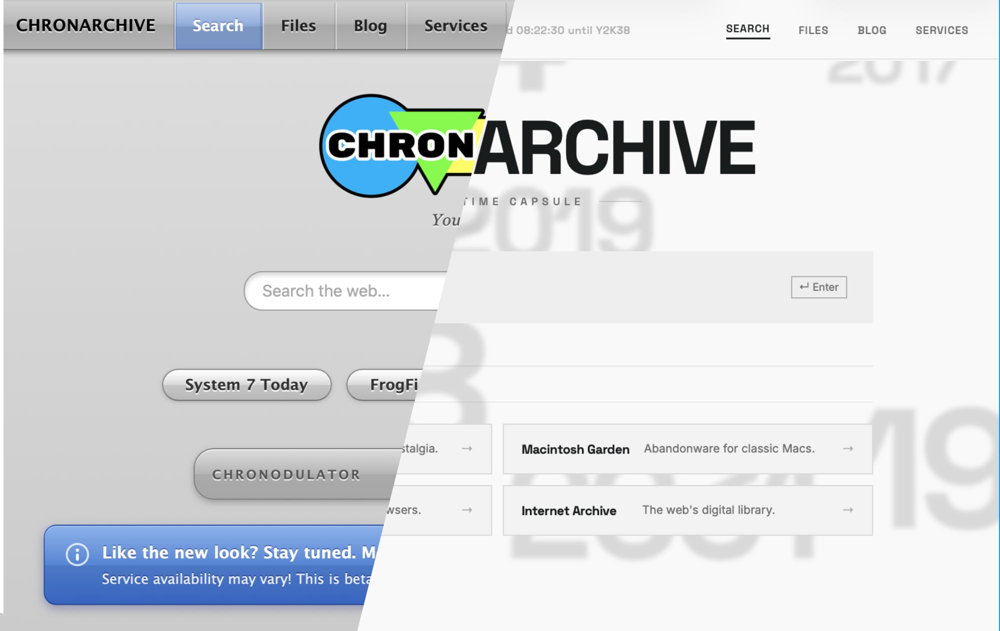

Your Time Capsule
We now have a Patreon!
|
 April 12, 2026ChronArchive was designed to be a platform for enabling everyone to use their old computers, phones, and other devices to their fullest potential. The design is platform agnostic, wether you use an M4 MacBook Pro, a Dell XPS, or a TRS-80, if it can use the basic frameworks of the internet, we hope to support it. As this is a small passion project it doesn't have the resources to test on every platform, so if your device doesn't work, let us know and we will try to support it! Servers are expensive, unlike the software used to run them, most of which free. Internet, hardware, and security services scale very quickly with usage. If you want to see this project grow, or you just want to support the cause, donations are always appreciated! Soon there will be some kind of special thanks to those who donate, but for now all I can promise is our infinite respect and appreciation! |
Chronodulator:
| CHRONODULATOR ----- --- |
|
Like the new look? Stay tuned. More to come! Service availability may vary! This is v0.2.3. |